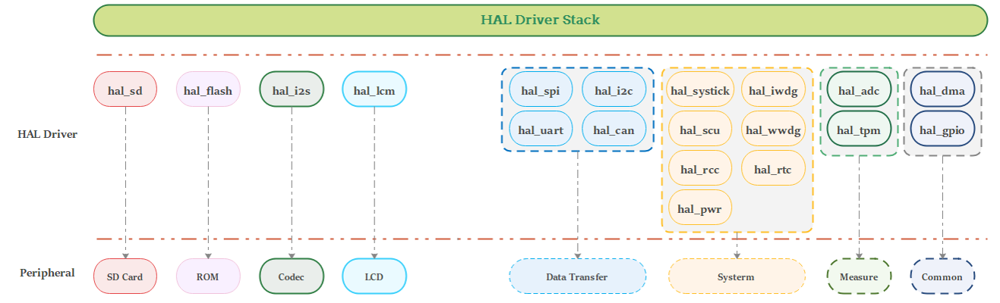

SONiX HAL驱动规格是一个软件API，它描述中间件堆栈和用户应用程序的外围驱动程序接口。 SONiX HAL驱动设计为通用的，独立于某个特定的HAL，使其可在各种支持的微控制器设备上重复使用。 SONiX HAL驱动涵盖了各种支持的不同外设类型的使用案例，但未包含所有的潜在的使用案例。 随着时间推移，计划能与更多的Group扩展SONiX HAL Peripheral，以涵盖新得的使用案例。
SONiX软件包是发布在Component类Sonix HAL Peripheral ，包含了头文件与一份文档。 这些头文件是外设驱动接口运行的参考。 这些运行主要是发布在相关微控制器系列的设备支持包里(Device Family Pack)，发布在Component Class Sonix HAL Peripheral 。 设备支持包(Device Family Pack)在Component Class Peripheral 中可能包含了更多的接口，用于拓展HAL-Peripheral规格涵盖到的标准外设驱动， 更多的特定设备的接口指的是比如：内存总线, GPIO或者DMA。

定义了下面的SN34F78X HAL-Peripheral API组：